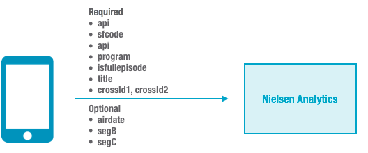

Use the Player V4 Nielsen analytics plugin (
Nielsen.min.js) to
track
Nielsen Analytics for Ooyala Player V4.
Run-time Flow During Playback
During playback, a playback event
triggers notification about the event to Nielsen Analytics.

Supported Players
The Nielsen Analytics plugin supports Nielsen
Analytics integration with the Ooyala HTML5 web player versions 4.8.5 and above.
Prerequisites
Before using the Nielsen plugin for Player V4, contact
your Nielsen representative and ask for your apid (a unique ID
provided by Nielsen). You will need to specify this value when you embed Player V4 on a
web page.
Step 1: Get the Latest Nielsen Plugin
- Download the latest version of the Nielsen.min.js plugin. For
the download URL, see the Ooyala Player V4 Release Notes.
- Host this plugin like you host other Player V4 plugins.
Step 2: Add Nielsen Integration on the Web Page
Add the following
script to the page on which you load the player. Be sure to load this plugin
after you load core.min.js.
<script src="url_where_hosted/Nielsen.min.js"></script>
Step 3 (Optional): Load the Nielsen SDK on the Web Page
Load one of
the following versions of the Nielsen SDK on the page on which you are loading the
player. If you do not load one of these options, the Nielsen plugin will load the Global
version by default.
Step 4: Specify Page-level Parameters for the Nielsen Plugin
As with
other Player V4 plugins, on the page where you want to run the player, you can specify
the following page-level parameters within the
playerparams
variable that is passed in during player creation (see
Page-level Parameters for Player V4). For details on these parameters, go to
the
Nielsen SDK Documentation.
Required Parameters
| Parameter |
Description |
| apid |
A unique ID provided by Nielsen. |
| sfcode |
Location of collections environment.
- Use "dcr-cert" for testing.
- Use "dcr" for production.
|
| apn |
Unique string identifying your player/site. |
| program |
Program name. |
| isfullepisode |
Full episode flag (used to distinguish between short and long
form content). |
| title |
Title for the video asset. |
| crossId1 |
Standard episode ID (should be unique). |
| crossId2 |
Identifies the content originator. |
Optional Parameters
| Parameter |
Description |
| airdate |
Original (local) air date and time. |
| segB |
Segment B (custom category breakout). |
| segC |
Segment C (custom category breakout). |
Step 5: Send a Test Page to Nielsen
Send a test page to Nielsen so
that they can verify and certify the page.
Example
<html>
<head>
<title>Nielsen Analytics Plugin Example</title>
<!-- V4 JS core is required. Plugins such as skin, discovery and Advertising need to be loaded separately -->
<script src="url_where_hosted/core.min.js"></script>
<script src="url_where_hosted/html5-skin.min.js"></script>
<link rel="stylesheet" href="url_where_hosted/html5-skin.min.css" />
<!-- A Video Plugin is required. This example shows the Main Video Plugin -->
<script src="url_where_hosted/main_html5.min.js"></script>
<!-- Analytics Plugins -->
<script src="url_where_hosted/Nielsen.min.js"></script>
</head>
<body>
<div id="container" style="width:640px; height:360px;"></div>
<script>
var playerParam = {
"pcode": "YOUR_PCODE",
"playerBrandingId": "YOUR_PLAYER_ID",
"skin": {
// Config contains the configuration setting for player skin. Change to your local config when necessary.
"config": "url_where_hosted/skin.json"
},
"Nielsen": {
"apid": "YOUR_APID",
"sfcode": "dcr-cert",
"apn": "Ooyala V4",
"program": "myProgram",
"isfullepisode": "N",
"title": "My Title",
"crossId1": "EP01S9S290015",
"crossId2": "ABC",
"airdate": "20150420 21:00:00",
"segB": "Comedy",
"segC": "Drama"
}
};
OO.ready(function() {
window.pp = OO.Player.create("container", "YOUR_ASSET_ID", playerParam);
});
</script>
</body>
</html>